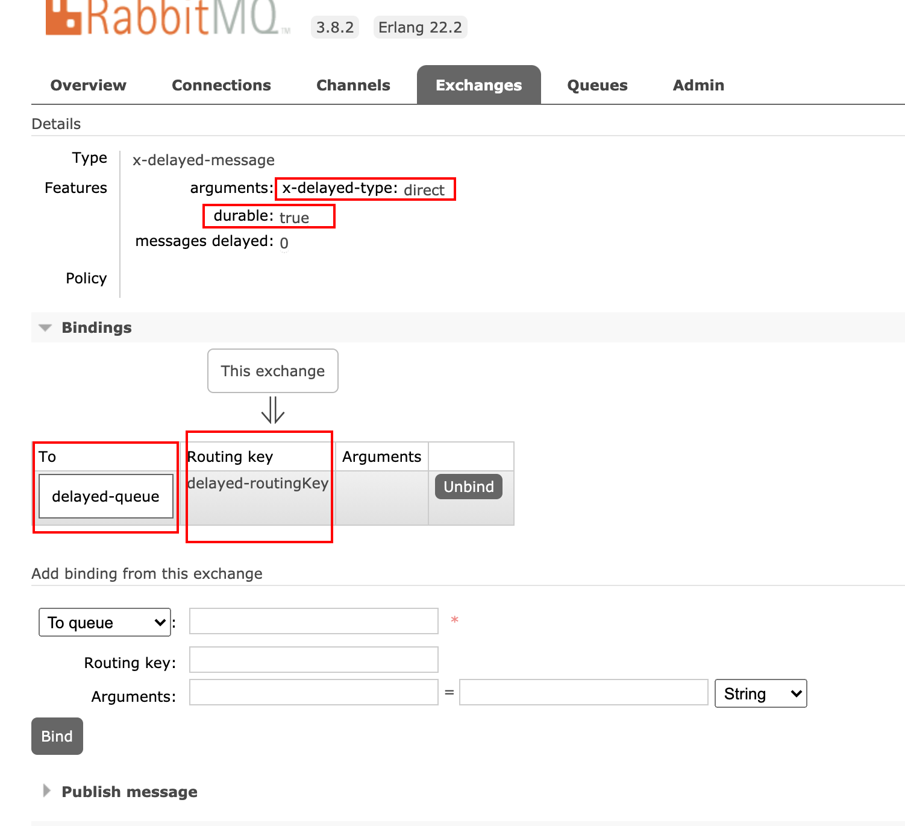
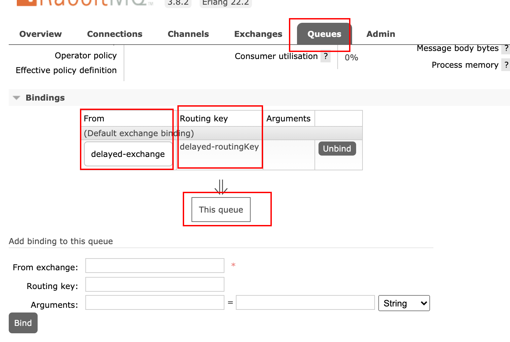
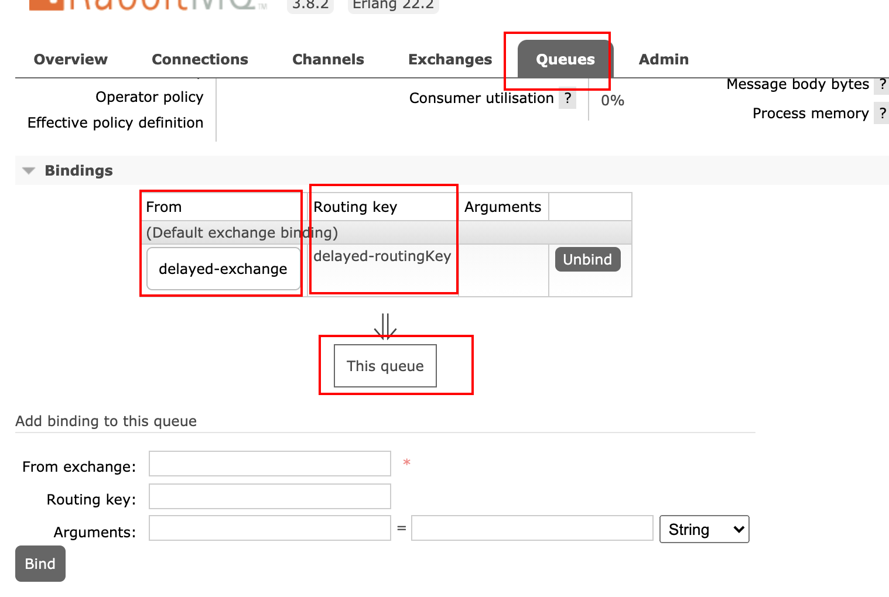
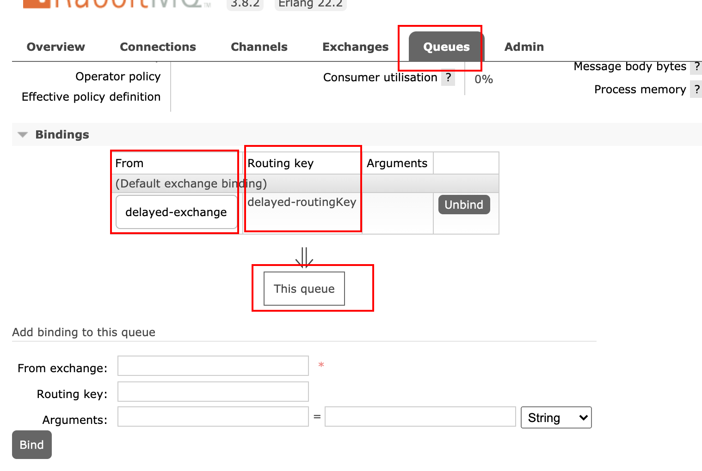

学不可以已。（《荀子·劝学》）
前提 目前项目中采用ts+eggjs结合的方式，针对定时任务，采用schedule，随着业务的增多，觉得缺点啥，可能就是缺消息队列吧。上一篇文章，针对rabbitmq的基本语法进行了学习。缺乏具体的使用场景，今天找到一个文章 Node.js结合RabbitMQ延迟队列实现定时任务
可能很多摘录自上文，但代码是自己跑过的。
实际业务中对于定时任务的需求是不可避免的，例如，订单超时自动取消、每天定时拉取数据等，在Node.js中系统层面提供了setTimeout、setInterval两个API或通过node-schedule这种第三方库来实现。复杂的、可用性要求较高的系统就会存在以下缺点。
消耗系统内存，如果定时任务很多，长时间得不到释放，将会一直占用系统进程耗费内存。
单线程如何保障出现系统崩溃后之前的定时任务不受影响？多进程集群模式下一致性的保证？
setTimeout、setInterval会存在时间误差，对于时间精度要求较高的是不行的。
RabbitMQ TTL+DLX 实现定时任务 RabbitMQ本身是不支持的，可以通过它提供的两个特性Time-To-Live and Expiration、Dead Letter Exchanges来实现，通过以下泳道图可以看到一个消息从发布到消费的整个过程。
死信队列 死信队列全称 Dead-Letter-Exchange 简称 DLX 是 RabbitMQ 中交换器的一种类型，消息在一段时间之后没有被消费就会变成死信 被重新 publish 到另一个 DLX 交换器队列中，因此称为死信队列。
死信队列产生几种情况
消息被拒绝
消息TTL过期
队列达到最大长度
设置DLX的两个参数：
deadLetterExchange : 设置DLX，当正常队列的消息成为死信后会被路由到DLX中deadLetterRoutingKey : 设置DLX指定的路由键
注意：Dead-Letter-Exchange也是一种普通的Exchange
消息TTL 消息的TTL指的是消息的存活时间，RabbitMQ支持消息 、队列 两种方式设置TTL，分别如下：
消息设置TTL：对消息的设置是在发送时进行TTL设置，通过 x-message-ttl 或 expiration 字段设置，单位为毫秒，代表消息的过期时间，每条消息的TTL可不同。
队列设置TTL：对队列的设置是在消息入队列时计算，通过 x-expires 设置，队列中的所有消息都有相同的过期时间，当超过了队列的超时设置，消息会自动的清除。
注意：如果以上两种方式都做了设置，消息的TTL则以两者之中最小的那个为准。
问题汇总 缺失插件 $ ts-node producer.ts /Users/mw/Desktop/Node_Demo/rabbitmq/node_modules/amqplib/lib/connection.js:91 var e = new Error(emsg); ^ Error: Connection closed: 503 (COMMAND-INVALID) with message "COMMAND_INVALID - unknown exchange type 'x-delayed-message'"
# 1. 罗列插件列表 $ rabbitmq-plugins list # 2. 去官网下载插件： rabbitmq_delayed_message_exchange # https://www.rabbitmq.com/community-plugins.html # 3. 找到插件目录 $ ps -ef | grep rabbitmq 501 723 1 0 Fri10AM ?? 0:00.03 /bin/sh /usr/local/opt/rabbitmq/sbin/rabbitmq-server 501 1125 723 0 Fri10AM ?? 64:35.98 /usr/local/Cellar/erlang/22.2/lib/erlang/erts-10.6/bin/beam.smp -W w -A 64 -MBas ageffcbf -MHas ageffcbf -MBlmbcs 512 -MHlmbcs 512 -MMmcs 30 -P 1048576 -t 5000000 -stbt db -zdbbl 128000 -K true -B i -- -root /usr/local/Cellar/erlang/22.2/lib/erlang -progname erl -- -home /Users/mw -- -pa /usr/local/Cellar/rabbitmq/3.8.2/ebin -noshell -noinput -s rabbit boot -sname rabbit@localhost -boot /usr/local/opt/erlang/lib/erlang/bin/start_clean -kernel inet_default_connect_options [{nodelay,true}] -rabbit tcp_listeners [{"127.0.0.1",5672}] -sasl errlog_type error -sasl sasl_error_logger false -rabbit lager_log_root "/usr/local/var/log/rabbitmq" -rabbit lager_default_file "/usr/local/var/log/rabbitmq/rabbit@localhost.log" -rabbit lager_upgrade_file "/usr/local/var/log/rabbitmq/rabbit@localhost_upgrade.log" -rabbit feature_flags_file "/usr/local/var/lib/rabbitmq/mnesia/rabbit@localhost-feature_flags" -rabbit enabled_plugins_file "/usr/local/etc/rabbitmq/enabled_plugins" -rabbit plugins_dir "/usr/local/Cellar/rabbitmq/3.8.2/plugins" -rabbit plugins_expand_dir "/usr/local/var/lib/rabbitmq/mnesia/rabbit@localhost-plugins-expand" -os_mon start_cpu_sup false -os_mon start_disksup false -os_mon start_memsup false -mnesia dir "/usr/local/var/lib/rabbitmq/mnesia/rabbit@localhost" -ra data_dir "/usr/local/var/lib/rabbitmq/mnesia/rabbit@localhost/quorum" -kernel inet_dist_listen_min 25672 -kernel inet_dist_listen_max 25672 -- 501 96364 96362 0 Fri03PM ?? 0:00.65 /usr/bin/ssh git@github.com git-upload-pack 'Quinton/egg-rabbitmq.git' 501 72100 11727 0 4:14PM ttys011 0:00.00 grep rabbitmq # 4. 将下载好的插件，放入 -rabbit plugins_dir "/usr/local/Cellar/rabbitmq/3.8.2/plugins" # 5. 开启插件 $ rabbitmq-plugins enable rabbitmq_delayed_message_exchange
代码–延迟队列 import * as amqp from 'amqplib' const url = `amqp://localhost:5672` async function publish (msg: string, ttl: number ) const exchange = 'my-delayed-exchange' ; const exchangeType = 'x-delayed-message' ; const routingKey = 'my-delayed-routingKey' ; const connect = await amqp.connect(url); const channel = await connect.createChannel(); await channel.assertExchange(exchange, exchangeType, { durable : true , arguments : {'x-delayed-type' : 'direct' }}) console .log('发布消息' , msg, ttl, routingKey); channel.publish(exchange, routingKey, Buffer.from(msg), { headers: { 'x-delay' : ttl, } }); channel.close(); } (async function test ( await publish('msg0 1S Expire' , 1000 ); await publish('msg0 2S Expire' , 2000 ); await publish('msg0 3S Expire' , 3000 ); process.exit(0 ); })();
import * as amqp from 'amqplib' const url = `amqp://localhost:5672` ;(async function publish ( const exchange = 'my-delayed-exchange' ; const exchangeType = 'x-delayed-message' ; const routingKey = 'my-delayed-routingKey' ; const queueName = 'my-delayed-queue' ; try { const connect = await amqp.connect(url); const channel = await connect.createChannel(); await channel.assertExchange(exchange, exchangeType, { durable : true , arguments : { 'x-delayed-type' : 'direct' } }) const queueA = await channel.assertQueue(queueName); console .log(queueA); await channel.bindQueue(queueA.queue, exchange, routingKey); await channel.consume(queueA.queue, msg => { console .log("接受到的消息" , msg.content.toString()); }, { noAck : true }); } catch (error) { console .log(error); } })();
mw$ ts-node producer.ts 发布消息 msg0 1S Expire 1000 delayed-routingKey 发布消息 msg0 2S Expire 2000 delayed-routingKey 发布消息 msg0 3S Expire 3000 delayed-routingKey $ ts-node consumer.ts { queue: 'delayed-queue' , messageCount: 0, consumerCount: 0 } 接受到的消息 msg0 1S Expire 接受到的消息 msg0 2S Expire


代码–死信队列 流程
生产者X发消息，队列A消费
设置死信队列B；
启动 X、A、B
X-A，形成生产-消费；X->A
kill A, 生产消息，过期后进入死信队列，由B进行消费，形成 X-B
import * as amqp from 'amqplib' (async function publish ( const url = `amqp://localhost:5672` ; const exchange = 'ex.exchange' ; const routingKey = 'ex.routerkey' ; const connect = await amqp.connect(url); const channel = await connect.createChannel(); await channel.assertExchange(exchange, 'direct' , { durable : false }); channel.publish(exchange, routingKey, Buffer.from('hello world' ), { expiration: 3000 }); await sleep(1 ); await connect.close(); process.exit(0 ); })(); function sleep (time: number ) return new Promise ((resolve ) => setTimeout(resolve, time*1000 )); }
import * as amqp from 'amqplib' (async function consumer ( const url = `amqp://localhost:5672` ; const deadLetterExchange = 'dlx.exchange' ; const deadLetterRoutingKey = 'dlx.routingkey' const exchange = 'ex.exchange' ; const queueExName = 'ex.queue' ; const routingKey = 'ex.routerkey' ; const connect = await amqp.connect(url); const channel = await connect.createChannel(); await channel.assertExchange(exchange, 'direct' , { durable : false }); const queueEX = await channel.assertQueue(queueExName, { exclusive: false , deadLetterExchange, deadLetterRoutingKey, }); await channel.bindQueue(queueExName, exchange, routingKey); await channel.consume(queueEX.queue, msg => { console .log("消费队列" , msg); }, {noAck : true }); })();
import * as amqp from 'amqplib' (async function consumer ( const url = `amqp://localhost:5672` ; const deadLetterExchange = 'dlx.exchange' ; const deadLetterRoutingKey = 'dlx.routingkey' const deadLetterQueue = 'dlx.queue' ; const connect = await amqp.connect(url); const channel = await connect.createChannel(); await channel.assertExchange(deadLetterExchange, 'direct' , { durable : false }); const queueDLX = await channel.assertQueue(deadLetterQueue, {exclusive : false }); await channel.bindQueue(deadLetterQueue, deadLetterExchange, deadLetterRoutingKey); await channel.consume(queueDLX.queue, msg => { console .log("消费死信队列" , msg); }, {noAck : true }); })();
代码–小结
延迟发送需要下载插件
x-delayed-type 支持 famout\direct\topic 原生交换机类型process.exit(0) 不会触发的原因，你觉得呢？
routingKey等自定义字段，最好是常量。
看管理界面
生产者只管生产消息即可，至于如何消费，都交给消费端去处理。
加油，打工人！！！
代码地址：https://github.com/simuty/Node_Demo
参考链接 Node.js结合RabbitMQ延迟队列实现定时任务
 学不可以已。（《荀子·劝学》）
学不可以已。（《荀子·劝学》）

 
